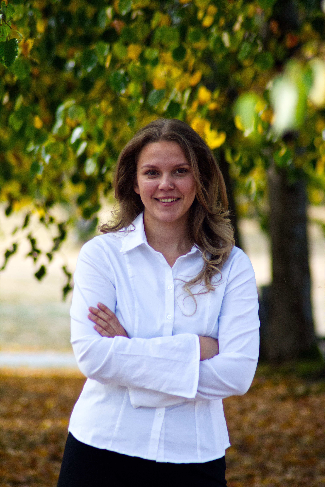

IT og informasjonssystemer
Iselin Rolness
3. års student ved Universitetet i Agder med interesse for UX-design, frontend og brukervennlige digitale løsninger.
Om meg
Hei! Jeg heter Iselin Rolness, er 23 år og kommer fra Tønsberg. Jeg liker å jobbe kreativt og utforske hvordan design og teknologi kan kombineres på en enkel og brukervennlig måte.
Jeg trives godt med samarbeid og liker spesielt prosjekter der man får følge prosessen fra idé og design til en fungerende løsning. Figma er et av verktøyene jeg liker best å jobbe med når jeg utforsker design og lager prototyper.
Utdanning
Bachelor i IT og informasjonssystemer
Universitetet i Agder
2024 – 2027
Prosjekter
Her kan du vise noen utvalgte prosjekter fra studiet, med en kort beskrivelse av hva du jobbet med og hvilken rolle du hadde.